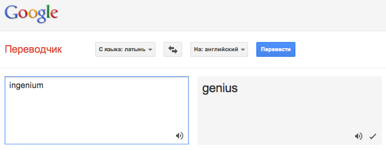
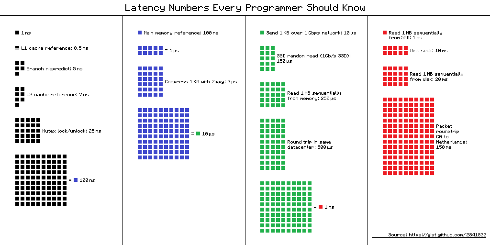

Базы данных: введение
Илья Тетерин
2012-09-10
(use arrow keys or PgUp/PgDown to move slides)
Илья Тетерин
2012-09-10
(use arrow keys or PgUp/PgDown to move slides)
Илья Тетерин / ya.pulser@gmail.com / @ya_pulser
A database is an organized collection of data, today typically in digital form.
Принципы построения систем хранения данных
Распространенные проблемы и варианты их решения
Навыки оценки готовых реализаций и работы с ними
Лекция - рассказ, слайды, ссылки для самостоятельной работы.
Домашнее задание - практическое примение знаний, код ревью от лектора.
Умение делать практические выводы из наборов слов и понятий, связанных с базами данных.
Понимание, что принципы, лежащие в основе базы данных, важнее деталей конкретной реализации.
Синтаксис гуглится в документации мгновенно, понимание приходит с опытом в ходе долгих раздумий.
В этом курсе "База данных" это организованная коллекция информации, потенциально необходимой в дальнейшем.
... плюс алгоритмы и программы, для работы с этой коллекцией.
Рассмотрим несколько примеров баз данных вокруг нас
Любой случай, когда при описании упоминается "список чего либо".
Из чего следует, что даже "список покупок" - тоже база данных.
У каждого человека есть бумажная записная книжка...
(хм ... либо такая есть у его мамы или бабушки)
Она лежит где-то дома, извлекается на свет, когда надо позвонить дяде в Воронеж или найти телефон сантехника.
Это организованная коллекция информации, которая нужна, но не прямо сейчас, а потенциально, в будущем.
Это есть база данных...
Разберем внимательно как она устроена и какие алгоритмы используются в ней.
может содержать
состав информации определяется хозяином книги
Всегда находим книгу, закрываем и бросаем книгу - у нас всегда есть однообразные подготовительные и завершающие шаги работы с базой.
Почти всегда мы сразу позиционируемся на какую-то страницу - факты, содержащиеся в информации позволяют "оптимизировать" процесс поиска
Всегда внутри алгоритма у нас есть действие, описывающееся глаголом "искать" - найти запись, найти свободное место.
Нам ни чем не поможет разделение на страницы...
Придется перебрать все страницы...
... и все записи на всех страницах.
Но шаги "найди базу, закрой базу" все равно будут с нами.
Информация:
An engineer is a professional, concerned with applying scientific knowledge, mathematics and ingenuity to develop solutions for technical, social and economic problems.
Engineers design materials, structures and systems while considering the limitations imposed by practicality, safety and cost.
The word engineer is derived from the Latin roots ingeniare ("to contrive, devise") and ingenium ("cleverness").
Инженер (фр. ingénieur, от лат. ingenium — способность, изобретательность) ...

wikipedia:«O» большое и «o» малое wikipedia:Big_O_notation
Пусть наш компьютер делает 1000 операций в секунду...
| O | 1 тыс. | 1 млн. |
|---|---|---|
| o(n) | 1 сек.. | 1000 сек. = 16 мин. |
| o(ln(n)) | 0.006 сек | 0.013 сек |
| o(n^2) | 16 мин. | 31 год |
| o(n ln(n)) | 7 сек. | 3.8 часа |
| o(k * n) | 9 * 1 | 9 * 1 * 1000 |
Храним 100 номеров
В простом списке - o(n) ~100/2 ~50 операций
В полностью отсортированным списке было бы О(ln(n)) ~6.6 операций
А у нас получается для 100 элементов:
ln(28) + 100/28/2 ~ 4.8 + 1.8 ~6.6
Что на самом деле очень неплохо, так как список букв - пресортирован и не меняется, не требует пересортировки.
За счет структуры (особенности имплементации базы данных) книжки - сложность уменьшается в 15 раз, по сравнению с простой записью:
O(100) vs O(ln(28)) + O(n/28)
Блог Романа Елизарова: Память: последовательный доступ vs случайный доступ. Как замерить?
L1 cache reference 0.5 ns Branch mispredict 5 ns L2 cache reference 7 ns 14x L1 cache Mutex lock/unlock 25 ns Main memory reference 100 ns 20x L2 / 200x L1 cache Compress 1K bytes with Zippy 3,000 ns Send 1K bytes over 1 Gbps network 10,000 ns 0.01 ms Read 4K randomly from SSD* 150,000 ns 0.15 ms Read 1 MB sequentially from memory 250,000 ns 0.25 ms Round trip within same datacenter 500,000 ns 0.5 ms Read 1 MB sequentially from SSD* 1,000,000 ns 1 ms 4X memory Disk seek 10,000,000 ns 10 ms 20x datacenter roundtrip Read 1 MB sequentially from disk 20,000,000 ns 20 ms 80x memory, 20X SSD Send packet CA->Netherlands->CA 150,000,000 ns 150 ms

### Minute:
L1 cache reference 0.5 s One heart beat (0.5 s)
Branch mispredict 5 s Yawn
L2 cache reference 7 s Long yawn
Mutex lock/unlock 25 s Making a coffee
### Hour:
Main memory reference 100 s Brushing your teeth
Compress 1K bytes with Zippy 50 min A TV show (including ad breaks)
### Day:
Send 2K bytes over 1 Gbps network 5.5 hr From lunch to end of work day
### Week
SSD random read 1.7 days A normal weekend
Read 1 MB sequentially from memory 2.9 days A long weekend
Round trip within same datacenter 5.8 days A medium vacation
Read 1 MB sequentially from SSD 11.6 days Almost 2 weeks for a delivery
### Year
Disk seek 16.5 weeks A semester in university
Read 1 MB sequentially from disk 7.8 months Almost a new human being
The above 2 together 1 year
### Decade
Send packet CA->Netherlands->CA 4.8 years A bachelor's degree
Ограничения физического мира накладывают ограничение на доступные решения.
Полностью оптимальное решение сложно (посортируйте от руки на бумаге).
Бумажная телефонная книга:
... настоящая база данных
Простые структуры могут дать хороший результат.
Быстрая имплементация может понятной.
Сохраненные данные статичны и добавление новой информации экономно.
Я хочу, дабы вы смотрели на мир с инженерной стороны - почему и как совершаются процессы в привычных вещах.
Своя база данных на Java (Ruby/Python/etc)
Скучно? ... тогда что-нить побольше ...
IMDB dataset: http://www.imdb.com/interfaces - база данных фильмов, актеров етс.
actors.list.gz - 198Mb gz, 687Mb ungzip, 13М строк о 1.5М актеров
actresses.list.gz - 109Mb gz, 400Mb ungzip, 7М строк о 0.8М актрис
Clooney, George 'Ocean's Eleven': The Look of the Con (2002) (V) [Himself]
'Solaris': Behind the Planet (2003) (V) [Himself]
101 Biggest Celebrity Oops (2004) (TV) (archive footage) [Himself - #57 Batman & Robin]
101 Sexiest Celebrity Bodies (2005) (TV) (archive footage) [Himself - Place #80]
13th Annual Critics' Choice Awards (2008) (TV) [Himself]
13th Annual Critics' Choice Awards Red Carpet Premiere (2008) (TV) [Himself]
Что-нить другое?